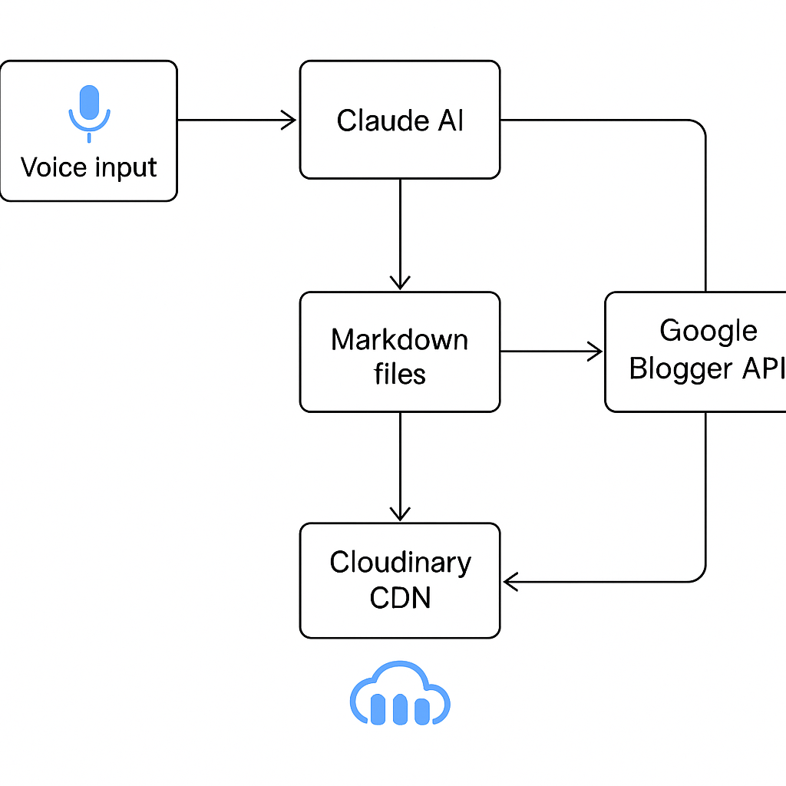

Welcome to my first blog post ever. And here's the thing: I built an entire blog automation system just so I could write this post.
I know that sounds backwards. Most people start a blog by writing "Hello World" in WordPress. I started by building a voice-to-published-blog pipeline powered by AI agents. Then I used it to write about itself.
Why? Because I kept putting off starting a blog. The friction was too high. Every time I had an idea, the thought of manually formatting markdown, finding images, configuring a blog platform, dealing with SEO... it killed the momentum before I even started.
So I did what any engineer does when procrastinating: I built a tool to automate the thing I was avoiding.
Here's what I ended up with: A complete voice-to-published-blog pipeline that took me from zero to this post you're reading.
You literally just ramble about your idea—like you're explaining it to a friend at a coffee shop—and the system:
Then you review it, change
status: draft
status: published
That's it. That's the whole workflow.
Here's the actual workflow I use now:
I have a Claude Code slash command called
/create-post
/create-post So today I made a really cool tech thing. It's for blogging. All I have to do is ramble about whatever I want to write about—I don't even have to structure it. The system takes my blurb, converts it into proper markdown, and even generates images for it...
Claude Code (powered by Anthropic's Sonnet) then:
posts/YYYY-MM-DD-slug/post.md
Here's the magic: the
/create-post
generate_image.py
If you want more images beyond what the command created, you can run:
uv run tools/generate_image.py "modern minimalist illustration of AI automation pipeline with voice input, markdown documents, and blog publishing, blue and purple gradient, clean tech aesthetic, isometric view, professional futuristic mood" posts/2025-10-12-my-post/hero.png
Each image costs about $0.015 (less than two cents) and looks way better than stock photos. We save the images directly in the post directory.
With the post written and images generated, I run three more slash commands:
# Optional: Check quality (SEO + prose linting) /quality-check posts/2025-10-12-my-post/ # Validate and preview locally /build posts/2025-10-12-my-post/ # Publish to Blogger (creates draft) /publish posts/2025-10-12-my-post/
The /quality-check
The /build
The /publish
blogger_id
When I'm ready to go live, I just change
status: draft
status: published
/publish
Here's what makes this work:
uv
2025-10-12-hello-world
/2025/10/hello-world.html

Here's the flow:
/create-post
blogger_id
draft
published
Everything is idempotent—you can run commands many times safely. The system is smart enough to:
blogger_id
Let me show you a real example. Here's my actual workflow for creating this exact post (my first blog post ever):
# 1. Talk about my idea (literally just rambled into Claude Code) /create-post So today I made a really cool tech thing... # 2. Claude wrote the post AND generated the images automatically! # 3. Optional: Run quality checks /quality-check posts/2025-10-12-voice-to-blog-automation/ # 4. Build and preview /build posts/2025-10-12-voice-to-blog-automation/ # 5. Publish as draft /publish posts/2025-10-12-voice-to-blog-automation/ # 6. Review on Blogger, then publish live # (Edit status: draft → published in post.md) /publish posts/2025-10-12-voice-to-blog-automation/
Total hands-on time: ~5 minutes (most of it reviewing the AI output—the images generated automatically!)
This is my first blog post ever. It took 5 minutes of actual work. The system I built to enable it took a day to build, but now the barrier to writing is gone.
Compare that to traditional blogging:
Traditional first post: 2+ hours of friction. This approach: Build once, write forever in 5 minutes.
One concern with AI-generated content: is it any good? Will it rank? Is it readable?
The
/quality-check
Checks for search optimization best practices:
Example output:
✅ Title length: 52 characters (optimal) ✅ Single H1 heading found ✅ Content length: 1,847 words ⚠️ Add meta description for search results ✅ 3 images with alt text
Vale checks writing quality automatically:
Example output:
12:34 suggestion 'really' is a weasel word write-good.Weasel 45:12 warning This sentence is too long write-good.TooWordy
You can ignore suggestions, but the system catches common mistakes before publishing. Run
/quality-check
Here's the truth: I'd been putting off starting a blog for years.
Not because I didn't have ideas. Not because I couldn't write. But because every time I thought about starting, I'd get overwhelmed by the setup:
So I'd think "I'll do it later" and never actually start.
This automation system changed that. By building it, I removed every excuse I had. Now the barrier to writing is as low as talking. I went from years of procrastination to a published post in 5 minutes of actual writing.
I'm planning to add:
This blog will dive deep into each piece of this automation pipeline—from setting up the Blogger API and OAuth flows, to building the markdown converter, to integrating Cloudinary for image optimization. I'll walk through the architecture decisions, the code, and the lessons learned along the way.
But here's where it gets even more interesting: adding an agentic layer on top.
Imagine the system automatically:
We're just scratching the surface of what's possible when you combine AI agents with content workflows.
Stay tuned for more. The future of content creation is autonomous, and we're going to build it together.
So this is my first blog post. Not a typical "Hello World," but a working system that made starting possible.
The irony isn't lost on me: I spent a day building automation to avoid spending 2 hours writing a blog post. But that's not really what happened. I spent a day removing the barrier that kept me from starting for years.
Now I have no excuses. The system is built. Writing takes 5 minutes. Publishing is one command.
If you've been putting off starting a blog (or any creative project), maybe you don't need motivation. Maybe you need to automate away the friction so that starting becomes the default instead of the exception.
This is post #1. Let's see how many more the automation makes possible.
Welcome to Agentic Engineer. Let's build things that make building things easier.